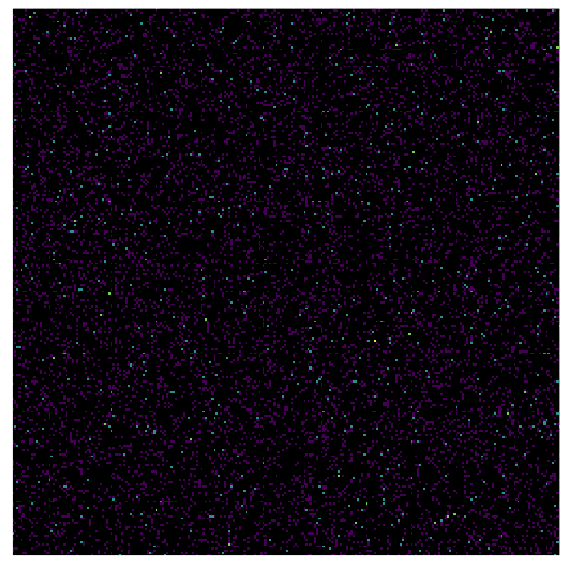
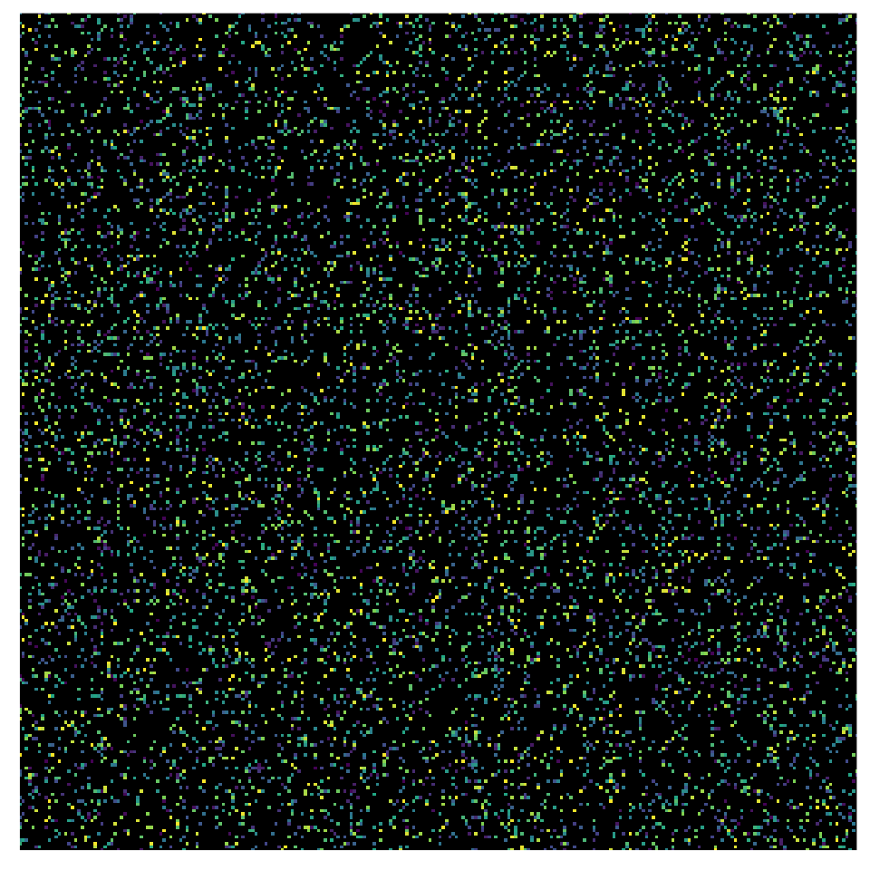

Addresses are grouped into networks determined by the pixel_prefix argument
of coord_ip(). Then the z values are summarized with summary function fun.
Usage
stat_summary_address(
mapping = NULL,
data = NULL,
...,
fun = NULL,
fun.args = list(),
na.rm = FALSE,
show.legend = NA,
inherit.aes = TRUE
)Arguments
- mapping
Set of aesthetic mappings created by
aes(). If specified andinherit.aes = TRUE(the default), it is combined with the default mapping at the top level of the plot. You must supplymappingif there is no plot mapping.- data
The data to be displayed in this layer. There are three options:
If
NULL, the default, the data is inherited from the plot data as specified in the call toggplot().A
data.frame, or other object, will override the plot data. All objects will be fortified to produce a data frame. Seefortify()for which variables will be created.A
functionwill be called with a single argument, the plot data. The return value must be adata.frame, and will be used as the layer data. Afunctioncan be created from aformula(e.g.~ head(.x, 10)).- ...
Other arguments passed on to
layer(). These are often aesthetics, used to set an aesthetic to a fixed value, likecolour = "red"orsize = 3. They may also be parameters to the paired geom/stat.- fun
Summary function (see section below for details). If
NULL(the default), the observations are simply counted.- fun.args
A list of extra arguments to pass to
fun.- na.rm
If
FALSE, the default, missing values are removed with a warning. IfTRUE, missing values are silently removed.- show.legend
logical. Should this layer be included in the legends?
NA, the default, includes if any aesthetics are mapped.FALSEnever includes, andTRUEalways includes. It can also be a named logical vector to finely select the aesthetics to display.- inherit.aes
If
FALSE, overrides the default aesthetics, rather than combining with them. This is most useful for helper functions that define both data and aesthetics and shouldn't inherit behaviour from the default plot specification, e.g.borders().
Aesthetics
stat_summary_address() understands the following aesthetics (required
aesthetics are in bold):
ip: Anip_addresscolumnz: Value passed to the summary function (required iffunis used)fill: Default isafter_stat(value)alpha
Computed variables
The following variables are available to after_stat():
value: Value of summary statisticcount: Number of observations
Summary function
The data might contain multiple rows per pixel of the heatmap, so a summary
function reduces this information to a single value to display.
This function receives the data column specified by the z aesthetic
and also receives arguments specified by fun.args.
The fun argument can be specified in multiple ways:
NULLIf no summary function is provided, the number of observations is computed. In this case, you don't need to specify the
zaesthetic, and the computed variablesvalueandcountwill be equal.- string
The name of an existing function (e.g.
fun = "mean").- function
Either provide an existing function (e.g.
fun = mean) or define a new function (e.g.fun = function(x) sum(x^2)).- formula
A function can also be created from a formula. This uses
.xas the summarized variable (e.g.fun = ~ sum(.x^2)).
Examples
dat <- data.frame(
ip = sample_ipv4(10000),
weight = runif(10000)
)
p <- ggplot(dat, aes(ip = ip)) +
coord_ip() +
theme_ip_light()
# simple count of observations
p +
stat_summary_address() +
scale_fill_viridis_c(trans = "log2", na.value = "black", guide = "none")
#> Warning: Transformation introduced infinite values in discrete y-axis

# compute mean weight
p +
stat_summary_address(aes(z = weight), fun = ~ mean(.x)) +
scale_fill_viridis_c(na.value = "black", guide = "none")
